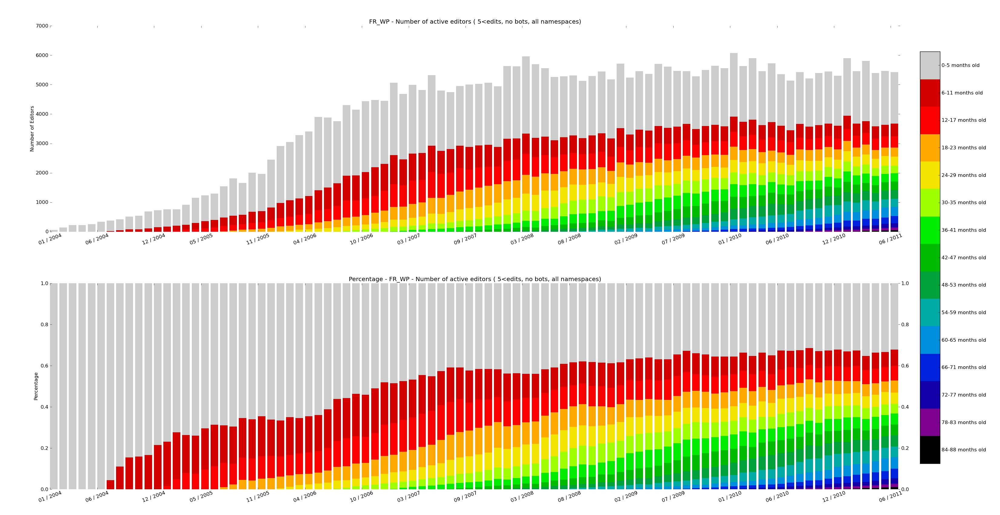
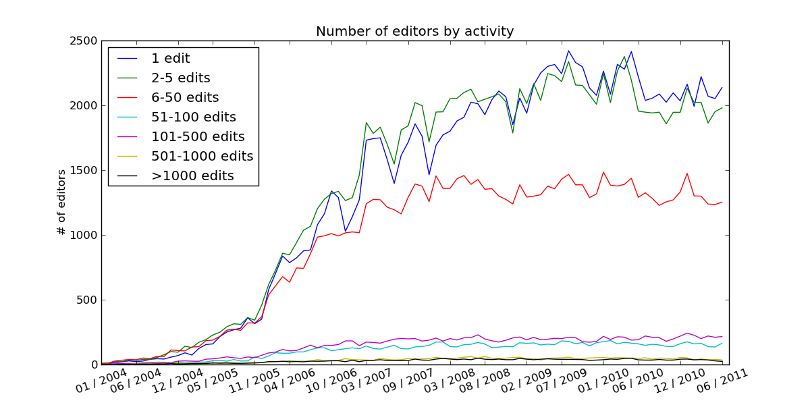

WikiPride is a framework for analyzing and visualizing Wikipedia data. Starting off with the Wikimedia SQL databases (for example on the Toolserver), the data is aggregated into an editor trends ‘friendly’ format. It can then be visualized in stacked bar charts whose pretty colors have given this framework its name, or analyzed using a time series framework like panda. This package is built on tools and findings from the Summer of Research 2011 by the Wikimedia foundation.
Note that this project (hopefully) becomes obselete when the new analytics cluster is up and running.
The following packages are used
At the moment only unix environments are supported.
First, create a configuration file that can be read by WikiPride. The following is an example configuration file (de.config) that configures WikiPride for the German wikipedia on the toolserver for the time period from January 2004 until Jan 2012. You also need a user database for storing auxiliary tables, u_declerambaul in this case. The directories section specifies the folders where the resulting reports will be stored.
[General]
language = de
filterbots = True
startYM = 200401
endYM = 201201
[Directories]
cmapname = 'spectral'
basedirectory = ~/example
datadirectory = %(basedirectory)s/data
userlistdirectory = %(basedirectory)s/userlists
reportdirectory = %(basedirectory)s/report
wikipridedirectory = %(basedirectory)s/wikipride
[MySQL]
sqlhost = dewiki-p.rrdb.toolserver.org
sqlwikidb = dewiki_p
sqluserdb = u_declerambaul
sqlconfigfile = ~/.my.cnf
sqldroptables = False
Next, one can simply invoke one of the three workflow steps.
python wikipride -c de.config preprocessing
python wikipride -c de.config data
python wikipride -c de.config report
Alternatively, you can use the example/runLanguages.sh script to generate complete reports for all language codes passed as parameters.
The concept of a cohort is introduced to extract aggregate statistics about editor behaviour.
First a set of editors is selected, the goal being to analyze their contributing trends. Usually this set is comprised of all editors on Wikipedia, though often the users flagged as bots are filtered. Alternatively, the set could contain only users of a certain tool like Huggle.
A cohort definition specifies a distribution over the editors. For each time unit, e.g. month, every editor in the set is uniquely associated with one cohort. For example:
- For absolute age per month cohorts, cohorts.age.AbsoluteAgePerMonth, an editor is assigned to the cohort that corresponds to the number of month since the first edit of the editor.
- For edit activity histogram cohorts, cohorts.histogram.EditorActivity, a cohort is associated with a range of edits an editor has made in given month (e.g. 100-500 edits). Each editor is assigned to the edits bin he falls into for that month.
Metrics can be collected for each encountered data point. For example:
- The number of edits made by the cohort in a given month
- The number of bytes added/removed by each cohort in a given month
- The number of editors in a cohort
The abstract class cohorts.base.Cohort defines variables and methods that need to be implemented by every subclass:
The method aggregateDataFromSQL() is called by the instantiated sublass. It executes the processSQLrow() method for every row in the resultset returned by the sqlQuery query.
First, the data in the MediaWiki SQL database needs to be preprocessed, which is done in data.preprocessing.process(). That method generates auxiliary SQL tables that are stored in the sqluserdb db, and all subsequent cohort analysis is done on these tables. The queries that create the tables are stored in the data.tables module.
Each cohort class implements the aggregateDataFromSQL() method, which computes the cohort statistics using the tables created in the preprocessing step. The report module specifies a set of cohorts that serve as a report which can be generated automatically. The method report.processData() is computing the aggregates for all cohort defined in the report.
The final step is the visualization of the aggregated data. See WikiPride visualizations.
WikiPride visualizations represent the trends of editor cohorts using stacked bar charts with a color map. Each bar is on the x-axis represents a set of cohorts who’s values are stacked. A wikipride plot can be produced for every collected metric (e.g. number of edits, bytes added). The wikiPride() method produces the plot.
Other graphs can be created by implementing linePlots() in a subclass, for example see RelativeAgeAllNamespaces.linePlots(). Use the helper methods addLine() and saveFigure(). The built-in report generates visualizations with the ReportItem.generateVisualizations() call.
{kind=link}
{kind=link}